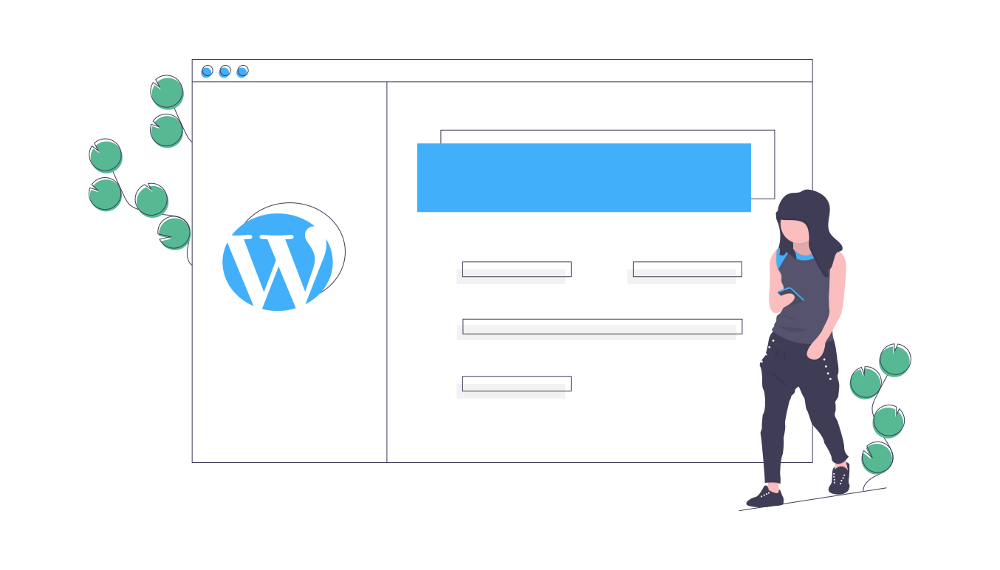

Managing 1000+ WordPress Sites as a Solo Developer 💻
My Tech Stack
Make Reselling WordPress Hosting Awesome 🌟
| Hosting | Kinsta |
| Domains | Hover |
| DNS | Constellix |
| WordPress Management | CaptainCore |
Keep up with better services
- The Tech Stack can and should change over time.
- Keep it simple. Only 1 or 2 hosts providers.
Healthy WordPress
is the goal 👍👌

What I do
- Managed Hosting
- Managed DNS
- Routine Maintenance
- Site Backups and Restore
- Site Migrations
- Theme or plugin fixes/workarounds
What I don't do
- Content updates
- Web design or development work
Top #3 ways I stay sane.
#1
Routine Maintenance
- Update everything, all themes and plugins. 🛡️
- Don't do manual updates, automate! 🤖
- Pick a time and schedule them. 🕘
Crontab scheduled tasks
Production sites updated every Wednesday at 9:15am.
15 09 * * 3 captaincore update @production.updates-on --fleetStaging sites updated every quarter at 12:15am.
15 0 1 */3 * captaincore update @staging.updates-on --fleetOther required maintenance
- Update WordPress core as needed within 24hrs.
- Update PHP at least every 2 years. Refer to support versions.
#2
Full Visiblity with Quicksaves
Quicksaves are lightweight snapshots
- Automatic nightly SFTP sync and git repository check in (themes and plugins only)
- If no changes, then no new commit.
- Can be used to roll back any theme/plugin to a previous version
- Not a replacement for backups however solves "What changed and when?"


#3
Smart Site Monitoring
Check for errors after updates
- Use a site monitor
- WordPress 5.2 includes recovery mode. Define
RECOVERY_MODE_EMAILwithin wp-config.php
define( 'RECOVERY_MODE_EMAIL', 'email@domain.tld' );Takeaways
- Work with theme and plugin developers to resolves issues. Most folks are happy to fix their bad code.
- Spend time building better tools not just provide technical support services.